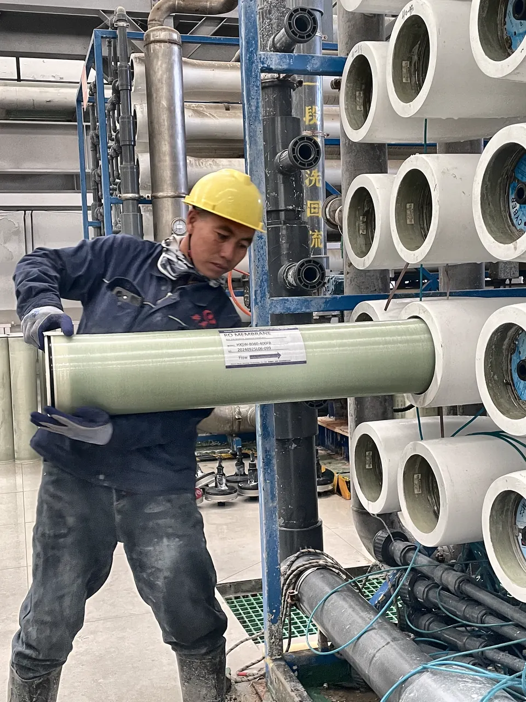
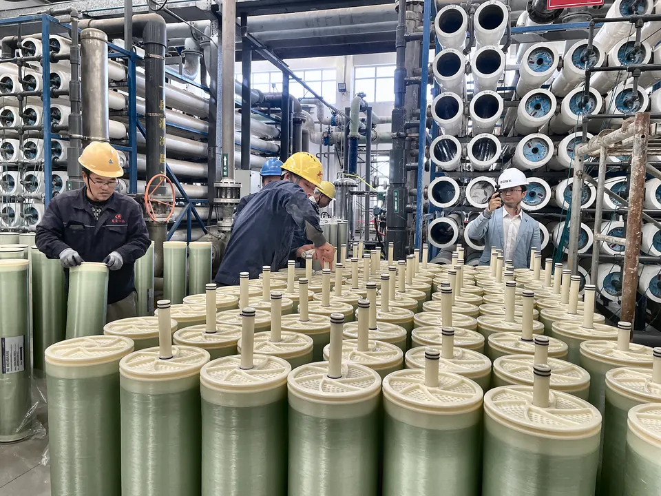

Fabricación
Fabricado en Jining, por quienes lo diseñaron.
Los fundadores de HUAXIN construyeron una línea de producción totalmente independiente que abarca materias primas, equipos y proceso. En 2025 el equipo constituyó Shandong Jinxin Membrane Technology Development Co., Ltd. en Jining, con una capacidad anual de 10 millones de m² de lámina de membrana.
En la línea
De la lámina de membrana al elemento.
Imágenes de la producción de HUAXIN: lámina de membrana manipulada en rodillos de precisión y enrollada en elementos en espiral.
 Instalación de HUAXIN
Instalación de HUAXINControl de proceso
Miles de parámetros. Los pocos que importan.
Tanto la membrana base como la capa funcional dependen de las condiciones de fabricación. HUAXIN combinó simulación por ordenador con amplios ensayos de proceso para encontrar los parámetros que determinan el rendimiento y la estabilidad a escala.
La optimización continua de componentes clave de los equipos mejoró la precisión del proceso de extrusión por ranura, elevando la estabilidad y la productividad de la línea y permitiendo la producción escalable de formulaciones de membrana de alta gama.
Montaje de módulos MBR
Nueve pasos de la fibra al módulo probado.
El diagrama de proceso de la nave MBR de HUAXIN, traducido. Cada módulo se somete a una prueba de estanqueidad antes de su envío.
- Clasificación de fibras 丝整理
- Colocación de fibras en utillaje 夹具排丝
- Encapsulado de extremos 端头封装
- Encapsulado con epoxi 环氧胶封装
- Sellado con poliuretano 聚氨酯胶密封
- Corte de extremos 端头切割
- Instalación de la carcasa 外壳安装
- Prueba de estanqueidad 气密性测试
- Módulo MBR terminado MBR膜组件
En instalaciones de clientes
Instalados donde el agua es más difícil.
Elementos HUAXIN 8040 desembalados, inspeccionados y cargados en portamembranas en plantas industriales de RO.



Fotografías in situ en plantas de RO de clientes. Color corregido para la web; contenido sin alterar.
Hable con un ingeniero
Visite, audite o pregunte.
Los equipos de compras e ingenieros pueden tratar con HUAXIN la producción, la documentación de control de calidad y las visitas a planta.